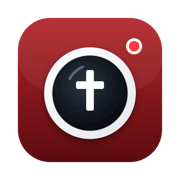

Church Cam Chords
The chords of the song on screen, on your phone or tablet. View-only.
Your church computers
No computer yet. In Church Cam, open the phone remote panel and scan the Musicians QR code with this phone's camera.
How it works
- Scan the Musicians QR code in Church Cam once.
- Add this page to your home screen (Share → Add to Home Screen) for a Chords icon.
- Next time, just open it on the church Wi-Fi: the chords open by themselves.
If the chords don't open, the computer may have a new Wi-Fi address: scan the Musicians QR code again.